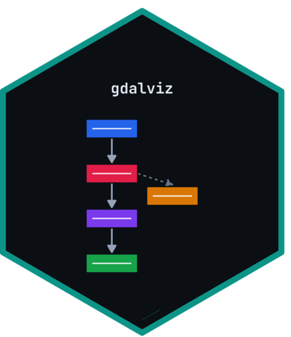

Build a renderer-agnostic graph model from a parsed pipeline
Source:R/graph.R
pipeline_graph.RdConverts a parse_pipeline() result into a graph of nodes and edges,
classifying each step, rendering its arguments as code, generating a
plain-language description, and propagating the feature-stream state
(CRS, geometry type, field schema, validity, ordering) along the pipeline.
Usage
pipeline_graph(x, contract = gdalviz_contract(), merge_repeated = TRUE)Arguments
- x
A
gdalviz_pipeline(fromparse_pipeline()) or a string/path accepted byread_gdalg().- contract
A
gdalviz_contract.- merge_repeated
Merge runs of 3+ consecutive identical commands (e.g. the one-field-at-a-time
set-field-typechains needed for schema overrides) into a single stacked node. Defaults toTRUE.